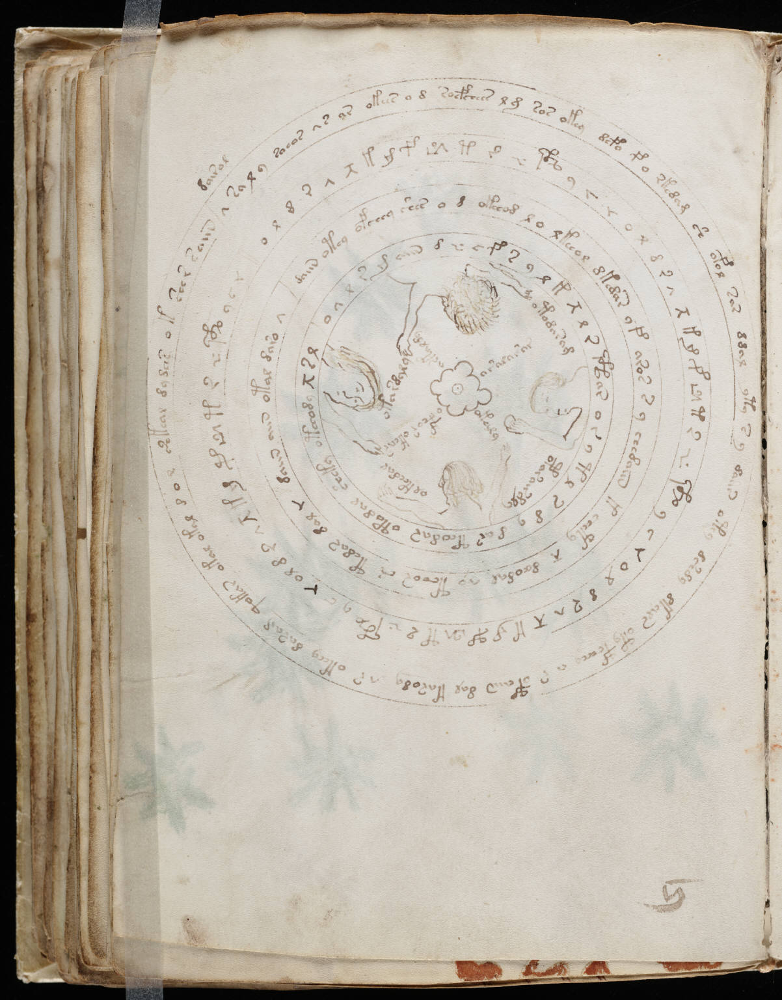

f57v
1dairol2v sa l y soeos vs ar okees o d socfchees lg sos okey defo fo rkedam sh ofol sar ddal yty s y daiis oteo dsh dy dkals ety fchcho a r ofaiin dal karody ar okchy daram qokar okal okal d o l shkeal dydas o k sher saiin 3oldrvxkkf*tr**yc*oldrvxkmf*tr**yc*oldrvxkkp*tr**yc*oldrvxkkp*tr**ycrn4daiin otey ofchey shes o d okchod o l okeeol dkedar of aros s y chedaiin k echty x doedal vo tchor cs tedas dal * daiin aiin otyl daro v5o v l r m aiin d * c f s y l k x l r * ar o s * t l s d y ar teodar otodar sheky otchody xsl6olkchdal7oparairdly8otardaly9otodarod10oralaror11okchoy12ocfhor okear13ackaldy
